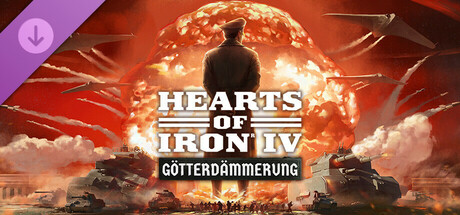
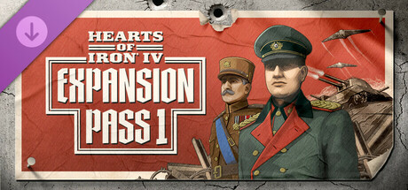
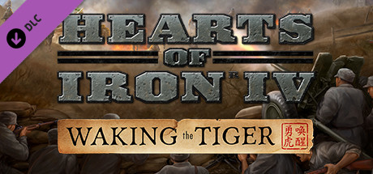

可下载内容
原页面：Downloadable content
可下载内容（DLC）是由Paradox 开发工作室（PDS）制作的钢铁雄心 IV扩展或附加内容。它们在本质上是模块化的，[1]这意味着玩家可以在启动菜单中勾选或取消勾选某个 DLC，从而决定是否启用它。扩展包 DLC 通常附带一个免费的补丁，向玩家提供大部分新内容，以免影响游戏的可玩性。因此，大多数 DLC 被视为可选内容，适合那些愿意以一定金钱支持换取更好游戏体验的玩家。
多人游戏同样受益于这种兼容性：也就是说，如果主机拥有某个玩法 DLC（扩展包与风味包）而玩家没有，游戏会视该玩家为已拥有该 DLC。
注意： 点击某个具体条目的横幅或图标，或许可以查看其更多详情。本页底部提供了主要 DLC 的快速摘要。
基础游戏版本与捆绑包
所有与本游戏相关的 DLC 都必须拥有基础游戏。外观/音乐类 DLC 可用于任何游戏版本，而内容类 DLC 无法在早于其发布时对应版本的游戏中使用。
| 标题与简要说明 | |
|---|---|
2016-06-06 发布。
|
|
包含《
|
|
包含《
|
|
包含《
|
扩展包
扩展包会大幅改变游戏：引入全新且经过改良的游戏机制，以及多种风味内容和各类平衡性调整（包含在随附的免费补丁中）。
| 标题与简要说明 | |
|---|---|
2025-11-20 发布。 在《不妥协，不投降》中为日本、中国和菲律宾开辟新的历史道路——这是《钢铁雄心 IV》的一款扩展包。更深入地掌控阵营，打造新的军事学说，决定太平洋乃至更远地区的命运。
|
|

2024-11-14 发布。 玩家可以书写德国、奥地利、匈牙利和比利时的新历史。建立工业与科研基础，以熬过世界上最大的冲突。追寻激动人心的新科研与军事选项，为毁灭性的新武器和对战略目标的戏剧性突袭开辟新道路。
|
|
2023-10-10 发布。
|
|
2022-09-27 发布。
建立新的帝国，抵御外国侵略，或探索中立政策的极限。该扩展包为三个国家带来了新的架空历史选项与玩法多样性，以及其它重大改动。
|
|
2021-11-23 发布。
第二次世界大战中最惨烈的战斗发生在欧洲东线。该扩展包为东欧的众多国家增添了更多细节，加入了反映苏联政治的独特游戏系统，并对游戏的军事层面作出了大量改进。 |
|
2020-02-25 发布。
|
国家包
国家包是规模较小的扩展包。与专注于添加新游戏机制的常规扩展包不同，国家包的主要着眼点在于为游戏增添更多风味（以及随附的免费补丁）。
| 标题与简要说明 | |
|---|---|
2025-03-04 发布。
在民族主义梦想与帝国主义压迫之间的狭窄航道中穿行。抵抗外国列强的要求，在世界舞台上争取属于自己的一席之地，通过外交与战争，在幼发拉底河与孟加拉湾之间的广袤土地上领导一场伟大的民族复兴。 为西亚、中亚和南亚的关键角色提供新的国策树，重点关注该地区对欧洲统治的区域性抵抗：
|
|
2024-03-07 发布。
|
|
2020-10-15 发布。
为黑海与爱琴海周边的小国提供全新的专属国策树。保加利亚、希腊和土耳其可以各自走上独特的历史与架空历史路线，抵抗列强试图控制博斯普鲁斯与达达尼尔海峡这些战略航道的企图。
|
战区包
战区包是规模较小的扩展包，与国家包类似，聚焦于特定的战争战区，但带有并非针对特定国家的额外特性。
| 标题与简要说明 | |
|---|---|
2026-06-11 发布。
在雷霆临门中步入指挥的核心——这是钢铁雄心 IV的一款战区包。通过军事指挥部和海军舰长等新特性，深化组织战役的艺术，并为夹在敌对帝国之间的国家提供独特的新内容；澳大利亚、暹罗和印度尼西亚：
|
焦点包
焦点包是仅聚焦于单个国家的小型国家包。
| 标题与简要说明 | |
|---|---|
2026-04-22 发布。
盟国在慕尼黑对捷克斯洛伐克的背叛，以及随后德国对该国的吞并，是欧洲迈向第二次世界大战的历史进程中的关键时刻。但请想象一个布拉格的白狮已准备好直面德国侵略的世界——面对压迫时的勇气。在我们时代的和平中探索这一情景，这是钢铁雄心 IV的一款新焦点包。 本焦点包与资深模组作者 Logan ‘Spicy Alfredo’ Calkins、Abbus Fung 和 Marijn ‘marijn211’ Vroegh 合作制作，为
|
扩展通行证
扩展通行证是某些 DLC 的限时捆绑包，最早于 2016 年推出，之后又分别在《诸神黄昏》和《不妥协，不投降》发售前推出。
| 标题与简要说明 | |
|---|---|
2025-09-25 发布（预购奖励）。 扩展通行证 2 将你带入太平洋战争的核心，在那里，帝国野心、激烈的跳岛战役与不断变化的同盟决定着各国的命运。随着一系列即将推出的内容，你将解锁新的路线，按自己的意愿重塑历史；无论是东方崛起一个称霸的帝国，还是一支牢不可破的联盟击退入侵部队。
|
|

2024-10-03 发布（预购奖励）。 这份《钢铁雄心 IV》扩展通行证包含 2 项扩展通行证奖励、1 个扩展包、1 个国家包和 1 个单位包。包内内容邀请你在大幅重做的国策树中书写德国的全新历史，作为被围困的亚洲小国求生，并用新的载具美术点缀你的游戏。
|
|
|
已整合的 DLC
本节列出此前需要付费、现已包含在基础游戏中的机制类 DLC。
| 标题与简要说明 | |
|---|---|
2019-02-28 发布，现已成为基础游戏的一部分。
|
|

|
|
|
|
|
免费 DLC
本节列出免费的机制类 DLC。
| 标题与简要说明 | |
|---|---|
2016-06-06 发布。
聚焦
|
音乐、外观与电子书
- 主条目：可下载内容 2
游戏还提供额外内容，形式包括音乐与外观包，以及可在游戏外阅读的电子书。
DLC 功能一览
标有 删除线 并带灰色背景的四个 DLC 现已并入基础游戏，因此这些功能对所有玩家始终启用。
| DLC | 新风味[* 1] | 重做风味[* 2] | 设计商 | 系统 | 作战计划与任务 | 体验优化 | 其他 |
|---|---|---|---|---|---|---|---|
| 波兰：团结与准备 | |||||||
| 此 DLC 现已并入基础游戏。 |
|
突击 |
| ||||
此 DLC 现已并入基础游戏。 |
法西斯傀儡国 | ||||||
此 DLC 现已并入基础游戏。 |
|
|
|
|
| ||
此 DLC 现已并入基础游戏。 |
舰船 |
|
|||||
| 情报机构 | 空中侦察 |
| |||||
| 坦克 |
|
后勤打击 |
| ||||
| 飞机 |
|
| |||||
|
装备预设 | 特种部队学说 | |||||
|
|||||||
|
|
阵营系统 |
| ||||
|
文件名
/Hearts of Iron IV/dlc 文件夹中的 DLC 文件列表（粗体名称为扩展包）：
- dlc001 – 历史德国肖像
- dlc002 – 波兰：团结就绪
- dlc003 – 火箭发射器单位包
- dlc004 – 著名战列舰单位包
- dlc005 – 重巡洋舰单位包
- dlc006 – 苏联坦克单位包
- dlc007 – 德国坦克单位包
- dlc008 – 法国坦克单位包
- dlc009 – 英国坦克单位包
- dlc010 – 美国坦克单位包
- dlc011 – 德国进行曲音乐包
- dlc012 – 盟军电台音乐包
- dlc013 – Sabaton 原声带
- dlc014 – 壁纸 （PreOrderReward_wallpaper）
- dlc015 – 独特壁纸 （Signed-SignupReward_wallpaper）
- dlc016 – 战争艺术 (电子书)
- dlc017 – 原声带
- dlc018 – 共赴胜利
- dlc019 – Sabaton 原声带 第 2 卷
- dlc020 – 死亡或耻辱
- dlc021 – 周年纪念包
- dlc022 – 唤醒猛虎
- dlc023 – 全民持枪
- dlc024 – 全民持枪壁纸
- dlc025 – 轴心装甲包
- dlc026 – 电台包
- dlc027 – 抵抗运动预购奖励
- dlc028 – 抵抗运动
- dlc029 – 盟军装甲包
- dlc030 – 盟军演讲包
- dlc031 – 博斯普鲁斯之战
- dlc032 – 东线飞机包
- dlc033 – 东线之歌
- dlc034 – 一步不退
- dlc035 – 绝不后退预购奖励
- dlc036 – 唯有鲜血
- dlc037 – 以血盟誓预购奖励
- dlc038 – 反抗暴政
- dlc039 – 反抗暴政预购奖励
- dlc040 – 效忠审判
- dlc041 – 效忠审判预购奖励
- dlc042 – 内容创作者包 - 苏联 2D 美术
- dlc043 – 诸神黄昏 (诸神黄昏)
- dlc044 – 扩展包 1 奖励 - 女武神的骑行音乐
- dlc045 – 扩展包 1 奖励 - 支持者包
- dlc046 – 帝国坟场
- dlc047 – 原型载具
- dlc048 – 扩展包 2 奖励 - 水上飞机母舰
- dlc049 – 不妥协，不投降
- dlc050 – 太平洋战舰
- dlc051 – 我们时代的和平
- dlc052 – 雷霆临门
参考资料
- ↑ 论坛，"A new patching and expansion policy for Paradox Development Studio"，2011-09-26。
- ↑ 论坛，Dev Corner | Final Countdown: Sneak Peeks & What's Next，2025-09-23
- ↑ 3.0 3.1 3.2 论坛，Thank you for your Service，2024-03-14 | DLC 已并入基础游戏。
- ↑ 论坛，Development Diary 57 - Poland: United and Ready，2016-05-20 | DLC 会自动加入基础游戏。